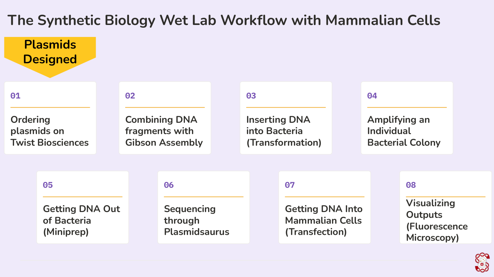
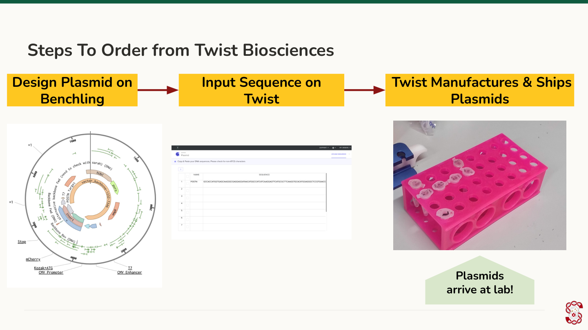
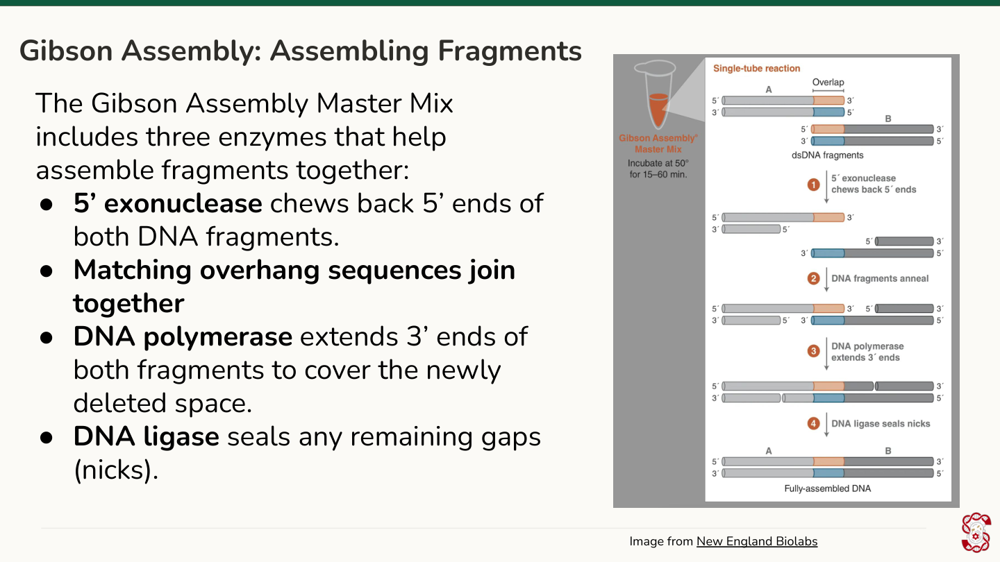
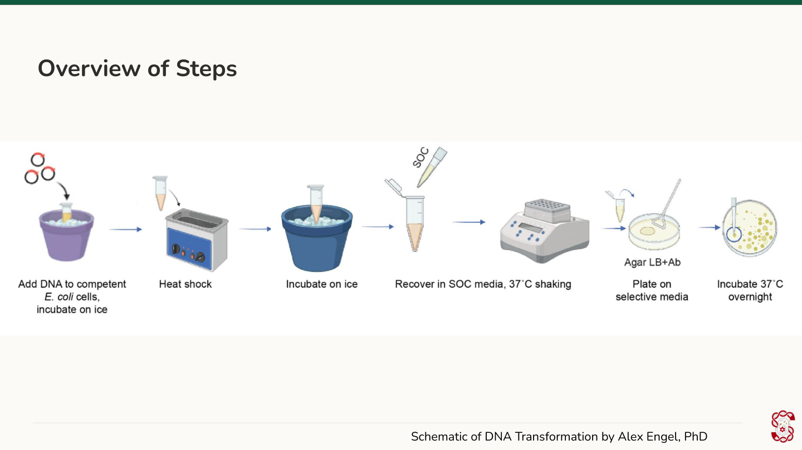
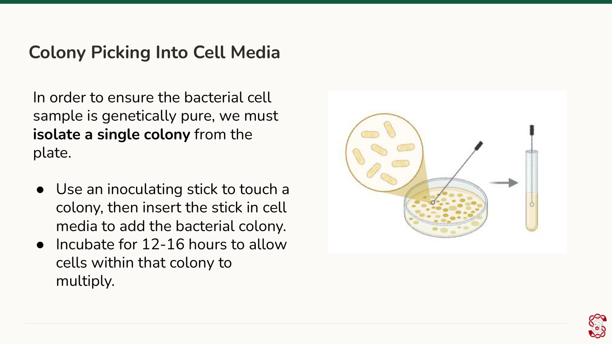
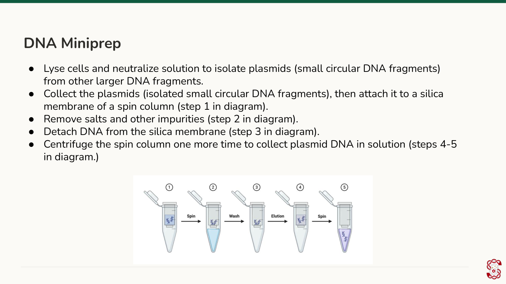
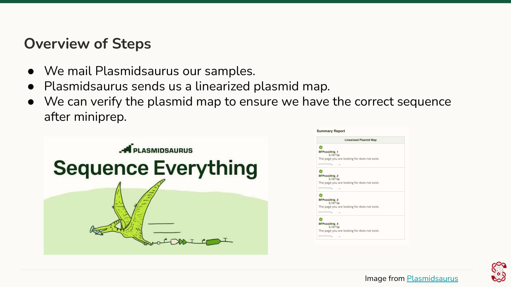
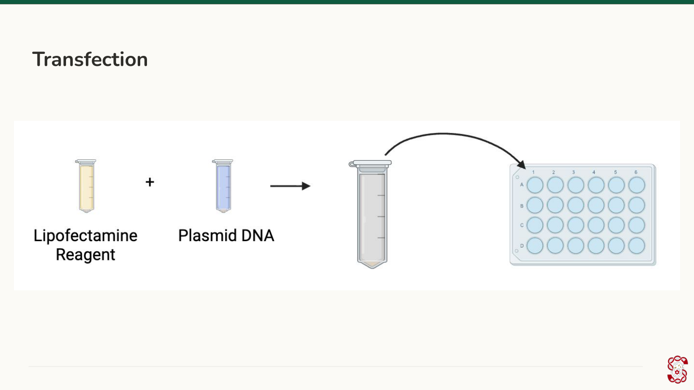
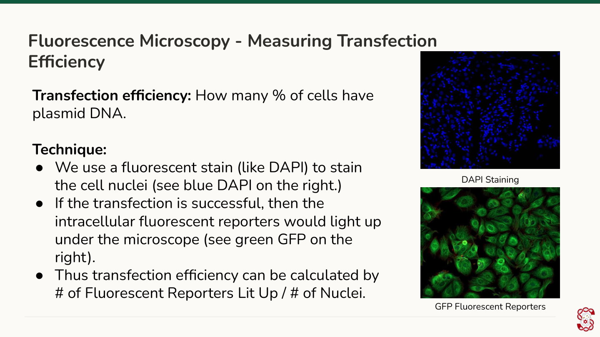
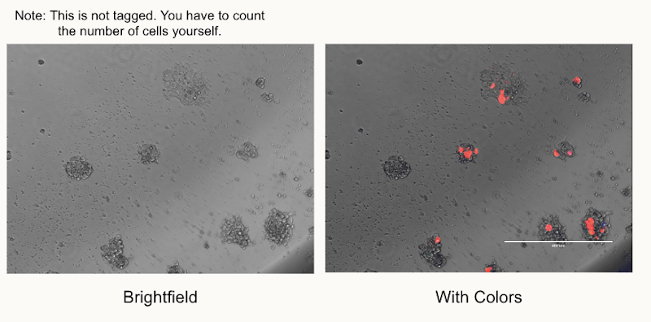

<!doctype html>
<html lang="en">
<head>
<meta charset="UTF-8">
<meta name="viewport" content="width=device-width, initial-scale=1.0">
<title>Module 6: Experimental Workflows — SynBase</title>
<link rel="stylesheet" href="../css/style.css?v=74">
</head>
<body>

<header class="site-header" id="site-header"></header>
<section class="module-hero" id="module-hero"></section>

<div class="container narrow">
  <div class="page-nav-mount" id="page-nav-mount"></div>
</div>
<main class="container narrow" id="page-viewport"></main>
<div class="container narrow">
  <div class="page-footer-nav" id="page-footer-nav"></div>
</div>

<script src="../js/modules-meta.js?v=14"></script>
<script src="../js/progress.js?v=25"></script>
<script src="../js/quiz-engine.js?v=19"></script>
<script>
const MODULE = {
  id: "module6",
  number: 6,
  title: "Experimental Workflows",
  lede: "In Module 5, you designed a plasmid on paper. Now it's time to follow that plasmid through the lab — from ordering the DNA to watching it glow under a microscope.",
  pages: [
    {
      id: "6.1r", type: "read", title: "Welcome to Experimental Workflows",
      html: `
        <p>In Module 5, you learned to design a plasmid. But a plasmid on paper is just a sequence — how do you actually get it into a living cell and confirm it does what you designed it to do? That's the question this module answers.</p>
        <p>One quick reminder from earlier modules: we insert plasmids into cells rather than linear DNA, because a plasmid's circular shape means it has no exposed ends. That makes it much harder for the cell's own enzymes to chew it up, and easier for it to survive intact until it's expressed.</p>
        <p>Getting from a finished plasmid design to a visible result takes eight steps: (1) ordering the plasmid, (2) combining DNA fragments with Gibson assembly, (3) transforming the DNA into bacteria, (4) isolating an individual bacterial colony, (5) miniprepping the DNA back out of the bacteria, (6) sequencing it to confirm it's correct, (7) transfecting it into mammalian cells, and (8) visualizing the result under a fluorescence microscope.</p>
        <p>Notice that even though the final destination is a mammalian cell, the plasmid makes a stop in bacteria first. Bacteria divide quickly, so routing the plasmid through them first lets you cheaply amplify a tiny amount of DNA into a large, usable quantity before it ever reaches a mammalian cell. Let's walk through each step.</p>
        
      `
    },
    {
      id: "6.2r", type: "read", title: "Step 1: Ordering Plasmids on Twist Bioscience", part: "Part 1: From Plasmid Design to Bacteria",
      html: `
        <p>Once a plasmid is designed in Benchling, the next step is turning that digital sequence into physical DNA. The sequence is entered into Twist Bioscience's ordering platform, the plasmid is ordered, and Twist synthesizes and ships it. What arrives in the mail is the same plasmid you designed — just as real DNA instead of a sequence file.</p>
        
      `
    },
    {
      id: "6.3r", type: "read", title: "Step 2: Combining DNA Fragments with Gibson Assembly", part: "Part 1: From Plasmid Design to Bacteria",
      html: `
        <p>If a plasmid needs to be built from more than one DNA fragment, Gibson assembly is how those fragments get joined into a single piece. Three enzymes do the work, in sequence:</p>
        <ul>
          <li>5' exonuclease chews back the 5' end of each fragment, exposing single-stranded overhangs.</li>
          <li>The fragments then anneal — pairing up wherever their exposed overhang sequences match.</li>
          <li>DNA polymerase extends the 3' ends of both fragments to fill in the space that was chewed back.</li>
          <li>DNA ligase seals whatever nicks remain, leaving one continuous, joined piece of DNA.</li>
        </ul>
        
      `
    },
    {
      id: "6.4p", type: "practice", title: "Gibson Assembly Enzymes", part: "Part 1: From Plasmid Design to Bacteria",
      question: {
        prompt: "Which of the following are correct pairings of enzyme and function in Gibson assembly? Select all that apply.",
        multi: true,
        options: [
          { text: "5' Exonuclease: Chews back 5' ends of both DNA fragments.", correct: true },
          { text: "DNA Polymerase: Seals any remaining gaps (nicks).", correct: false },
          { text: "DNA Ligase: Extends 3' ends of both fragments to cover the newly deleted space.", correct: false }
        ],
        explanation: "5' exonuclease is correctly paired with chewing back the 5' ends. The other two options have their enzymes swapped — DNA polymerase extends the 3' ends, and DNA ligase seals the remaining nicks."
      }
    },
    {
      id: "6.5r", type: "read", title: "Step 3: Inserting DNA Into Bacteria (Transformation)", part: "Part 1: From Plasmid Design to Bacteria",
      html: `
        <p>DNA transformation is the process of inserting plasmids into bacterial cells — usually E. coli. It requires competent E. coli: cells that have been treated to have increased permeability to DNA.</p>
        <p>The DNA mix is first added to the competent E. coli, then briefly incubated on ice, which helps the DNA bind to the cell surfaces. The mixture is then heat-shocked, creating temporary tears in the cell wall along with a temperature gradient that drives DNA into the cells. Immediately afterward, the cells go back on ice, which seals those tears and traps the DNA inside.</p>
        <p>That sudden temperature swing stresses the cells, so they're given time to recover in SOC media, which supplies the nutrients they need to survive. The cell-media mixture is shaken at 37°C for about an hour.</p>
        <p>Finally, a small amount of the mixture is spread onto an agar plate with a cell-spreading stick, so individual bacterial colonies can form. The plate is incubated overnight.</p>
        
      `
    },
    {
      id: "6.6p", type: "practice", title: "Why Competent Cells?", part: "Part 1: From Plasmid Design to Bacteria",
      question: {
        prompt: "What is the primary reason why competent E. coli cells are required for transformation?",
        options: [
          { text: "Competent cells are edited to have increased permeability to DNA.", correct: true },
          { text: "Competent cells are selected to have higher cell viability.", correct: false },
          { text: "Competent cells are selected to have higher cell density.", correct: false },
          { text: "Competent cells are edited to have increased intracellular nutrients.", correct: false }
        ],
        explanation: "\"Competent\" specifically means the cells have been treated to let DNA pass through their membrane more easily — that permeability is what makes transformation possible in the first place."
      }
    },
    {
      id: "6.7p", type: "practice", title: "Results of Transformation", part: "Part 1: From Plasmid Design to Bacteria",
      question: {
        prompt: "Select all that are true: what is the result of doing DNA transformation?",
        multi: true,
        options: [
          { text: "The DNA will change in shape from a circular to a linear shape.", correct: false },
          { text: "The DNA will be amplified significantly due to the fast cell division rate in bacteria.", correct: true },
          { text: "The DNA will be inserted into bacterial cells.", correct: true },
          { text: "The DNA will be inserted into mammalian cells.", correct: false }
        ],
        explanation: "Transformation gets the plasmid into bacterial cells, and because bacteria divide quickly, that also amplifies the amount of usable plasmid — which is the whole reason the workflow routes through bacteria first. The plasmid's circular shape doesn't change, and mammalian cells aren't involved until much later."
      }
    },
    {
      id: "6.8r", type: "read", title: "Step 4: Amplifying an Individual Bacterial Colony (Colony Picking)", part: "Part 1: From Plasmid Design to Bacteria",
      html: `
        <p>After overnight incubation, bacterial colonies form on the plate — visible as individual dots. To isolate one, an inoculating stick is used to pick up a single colony and transfer it into a 5 mL mix of LB broth, where the cells within that one colony can multiply. That mixture is then incubated overnight.</p>
        
      `
    },
    {
      id: "6.9r", type: "read", title: "Step 5: Getting DNA Out of Bacteria (Miniprep), Part A", part: "Part 2: Extracting and Verifying DNA",
      html: `
        <p>DNA miniprep removes the plasmid DNA from bacterial cells — a necessary step before that DNA can go anywhere near a mammalian cell.</p>
        <p>A small sample of the overnight cell-media mix is added to a centrifuge tube. Centrifugation pellets the cells at the bottom of the tube; the supernatant (the cell-free liquid above the pellet) is aspirated off, and the remaining sample is loaded onto a spin column. From there, a series of three buffers processes the sample:</p>
        <ul>
          <li><strong>Buffer P1 (resuspension buffer)</strong> protects the DNA from degrading during the lysis step that follows.</li>
          <li><strong>Buffer P2 (lysis buffer)</strong> lyses the cells open, releasing the DNA into an alkaline environment.</li>
          <li><strong>Buffer N3 (neutralization buffer)</strong> neutralizes that alkaline pH, letting the plasmid DNA snap back into its circular shape.</li>
        </ul>
      `
    },
    {
      id: "6.10r", type: "read", title: "Step 5: Getting DNA Out of Bacteria (Miniprep), Part B", part: "Part 2: Extracting and Verifying DNA",
      html: `
        <p>With the three buffers added, the spin column is centrifuged. This is where plasmid DNA gets separated from larger, linear non-plasmid DNA: the sample binds to a silica membrane inside the column, the larger DNA passes through into the collection tube below, and the smaller plasmid DNA stays attached to the membrane. That flow-through liquid is discarded.</p>
        <p>Next, a wash buffer — <strong>Buffer PE</strong> — is added, and the column is centrifuged again to rinse away salts and other impurities, which collect in the tube below and are discarded.</p>
        <p>Finally, an elution buffer — <strong>Buffer EB</strong> — is added to detach the purified DNA from the membrane. The column is centrifuged one last time (sometimes more than once, to maximize yield), and the miniprepped DNA collects in the tube below — ready for the next step.</p>
        
      `
    },
    {
      id: "6.11m", type: "matching", title: "Miniprep Buffer Check-In", part: "Part 2: Extracting and Verifying DNA",
      matching: {
        instructions: "Match each buffer to its function:",
        pairs: [
          { left: "Buffer P1", right: "Resuspension buffer; protects DNA from degrading before lysis" },
          { left: "Buffer P2", right: "Lysis buffer; breaks open the cells and creates an alkaline environment" },
          { left: "Buffer N3", right: "Neutralization buffer; neutralizes the alkaline pH so plasmid DNA re-forms its circular shape" },
          { left: "Buffer PE", right: "Wash buffer; removes salts and other impurities" },
          { left: "Buffer EB", right: "Elution buffer; detaches the purified DNA from the spin column membrane" }
        ]
      }
    },
    {
      id: "6.12p", type: "practice", title: "What Isn't a Miniprep Step?", part: "Part 2: Extracting and Verifying DNA",
      question: {
        prompt: "Which of the following is NOT a step of DNA miniprep?",
        options: [
          { text: "Removing salts and other impurities.", correct: false },
          { text: "Washing mammalian cells to prepare them for transfection.", correct: true },
          { text: "Isolating DNA fragments of different sizes.", correct: false },
          { text: "Centrifugation to collect plasmid DNA in solution.", correct: false }
        ],
        explanation: "Miniprep is entirely a bacterial-DNA-extraction process — mammalian cells aren't part of it at all. Washing mammalian cells happens later, as part of preparing them for transfection in step 7."
      }
    },
    {
      id: "6.13r", type: "read", title: "Step 6: Sequencing through Plasmidsaurus", part: "Part 2: Extracting and Verifying DNA",
      html: `
        <p>DNA transfection (the next step) is time-consuming and relatively costly, so before committing to it, bioengineers confirm the miniprepped DNA is actually the sequence they intended.</p>
        <p>Sequencing is done by mailing a small sample of the miniprepped DNA to a sequencing company — commonly Plasmidsaurus. Within about a day, Plasmidsaurus emails back the full sequence, which is then aligned against the original intended sequence from Benchling to confirm the lab DNA matches the design.</p>
        
      `
    },
    {
      id: "6.14p", type: "practice", title: "Company Pairings", part: "Part 2: Extracting and Verifying DNA",
      question: {
        prompt: "The wet-lab process involves products and services from several companies. Which of the following is the correct pairing between company and task?",
        options: [
          { text: "Benchling: Sequencing plasmids.", correct: false },
          { text: "Plasmidsaurus: Designing plasmids.", correct: false },
          { text: "Twist Bioscience: Ordering plasmids.", correct: true }
        ],
        explanation: "Benchling is where plasmids are designed, not sequenced; Plasmidsaurus is where they're sequenced, not designed; Twist Bioscience is where they're ordered and manufactured."
      }
    },
    {
      id: "6.15r", type: "read", title: "Step 7: Getting DNA Into Mammalian Cells (Transfection)", part: "Part 3: Into Mammalian Cells and Visualizing Results",
      html: `
        <p>Mammalian DNA transfection introduces the plasmid into mammalian cells. It works by mixing a lipofectamine reagent (Lipofectamine 3000 is one common example) with the DNA to form a lipoplex.</p>
        <p>Lipofectamine reagents are positively charged, which lets them bind readily to negatively charged DNA and helps that complex cross the negatively charged inner portion of the cell's phospholipid bilayer. Along the way, the lipofectamine layer also shields the DNA from being destroyed by enzymes.</p>
        <p>Experimentally, the DNA-lipofectamine mix is added to a well plate of cells that were pre-plated 24 hours before transfection.</p>
        
      `
    },
    {
      id: "6.16p", type: "practice", title: "Result of Transfection", part: "Part 3: Into Mammalian Cells and Visualizing Results",
      question: {
        prompt: "What is the result of doing DNA transfection in mammalian cells?",
        options: [
          { text: "Plasmids are inserted into bacterial cells.", correct: false },
          { text: "Plasmids are inserted into mammalian cells.", correct: true },
          { text: "Plasmids are lysed.", correct: false },
          { text: "Plasmids are taken out of bacterial cells.", correct: false }
        ],
        explanation: "Transfection is the mammalian-cell counterpart to bacterial transformation — it's specifically how the plasmid gets into mammalian cells, which is the whole point of steps 1-6."
      }
    },
    {
      id: "6.17r", type: "read", title: "Step 8: Visualizing Outputs (Fluorescence Microscopy)", part: "Part 3: Into Mammalian Cells and Visualizing Results",
      html: `
        <p>After 48 hours, the transfected cells are ready to examine under a fluorescence microscope, which visualizes how many cells actually took up the plasmid and are expressing its fluorescent reporter.</p>
        <p>The microscope offers five settings: brightfield (plain light — useful only for seeing cell boundaries, not fluorescence), red fluorescence, green fluorescence, blue fluorescence, and overlay (all four images combined). Each color setting should only light up if the plasmid actually carries a reporter of that color — for example:</p>
        <ul>
          <li>A plasmid with only a red reporter shows red dots under red fluorescence, and nothing under blue or green.</li>
          <li>A plasmid with red and green reporters shows dots under both those settings, but nothing under blue.</li>
          <li>A plasmid with all three reporters lights up under all three color settings.</li>
        </ul>
      `
    },
    {
      id: "6.18s", type: "shortanswer", title: "How Long Until You Check the Microscope?", part: "Part 3: Into Mammalian Cells and Visualizing Results",
      shortAnswer: {
        prompt: "How many hours after transfection are cells ready to be examined under the fluorescence microscope?",
        acceptedAnswers: ["48", "48 hours"],
        explanation: "As stated in Step 8, transfected cells are examined under the fluorescence microscope after 48 hours — enough time for the cells to take up the plasmid and express its fluorescent reporter before you image them."
      }
    },
    {
      id: "6.19r", type: "read", title: "Step 8: Measuring Transfection Efficiency", part: "Part 3: Into Mammalian Cells and Visualizing Results",
      html: `
        <p>Transfection efficiency measures what percentage of cells actually took up the plasmid DNA. For a plasmid expressing green fluorescent protein, that's calculated as the number of green fluorescent spots (on the green fluorescence setting) divided by the total number of cells visible on the brightfield image — the overlay image makes it easier to compare the two side by side.</p>
        <p>For example, if a sample shows 20 cells on brightfield but only 17 green dots, the transfection efficiency is 17/20, or 85%.</p>
        <p>One way to count total live cells is with a fluorescent dye like DAPI, which stains all nuclei blue — though that only works if the plasmid isn't also expressing a blue fluorescent reporter, since the two would be indistinguishable.</p>
        
      `
    },
    {
      id: "6.20p", type: "practice", title: "Calculate Transfection Efficiency", part: "Part 3: Into Mammalian Cells and Visualizing Results",
      question: {
        prompt: "A sample shows 18 cells on the brightfield image and 12 green fluorescent dots on the green fluorescence setting. What is the transfection efficiency for this sample?",
        options: [
          { text: "12%", correct: false },
          { text: "33%", correct: false },
          { text: "67%", correct: true },
          { text: "85%", correct: false }
        ],
        explanation: "Transfection efficiency = (fluorescent cells) ÷ (total cells on brightfield) = 12 ÷ 18 ≈ 0.67, or about 67%."
      }
    },
    {
      id: "6.21p", type: "practice", title: "Estimate Transfection Efficiency from a Real Image", part: "Part 3: Into Mammalian Cells and Visualizing Results",
      question: {
        prompt: 'What is the percentage transfection efficiency based on this image?',
        options: [
          { text: "0-10%", correct: false },
          { text: "10-20%", correct: false },
          { text: "30-40%", correct: false },
          { text: "70-80%", correct: true }
        ],
        explanation: "Most of the cell clusters visible in the brightfield image show at least some red fluorescence in the \"With Colors\" image — a high proportion, landing the estimate in the 70-80% range. Real microscopy images like this one are inherently approximate to eyeball, which is why the answer is a range rather than an exact percentage."
      }
    },
    {
      id: "6.22o", type: "ordering", title: "Recap: Ordering the Workflow", part: "Part 3: Into Mammalian Cells and Visualizing Results",
      ordering: {
        prompt: "Arrange the following steps of the synthetic biology wet-lab workflow in the correct order, from first to last.",
        items: ["Ordering Plasmids", "Gibson Assembly", "Transformation", "Colony Picking (Isolating Colonies)", "Miniprep", "Sequencing", "Transfection", "Fluorescence Microscopy"],
        explanation: "The full order is: order plasmids → Gibson assembly → transformation → colony picking → miniprep → sequencing → transfection → fluorescence microscopy. The plasmid is routed through bacteria first to cheaply amplify and verify it, then moved into mammalian cells to visualize a result."
      }
    },
    {
      id: "6.23f", type: "freeresponse", title: "Discussion: Explain the Workflow in Your Own Words", part: "Part 3: Into Mammalian Cells and Visualizing Results",
      freeResponse: {
        prompt: "In your own words, explain the 8-step synthetic biology wet-lab workflow — from ordering a plasmid to fluorescence microscopy — in about 8-10 sentences.<br><br>Zoom out for a moment: these eight steps are literally how you'd carry the need you scoped in Module 3, and the circuit and plasmid you designed for it in Modules 4 and 5, the rest of the way to an actual working result — from a real-world problem, to a design on paper, to glowing proof in a living cell that it works."
      }
    }
  ]
};

(async () => {
  const user = await bootstrapAuthAndProgress(false);
  if (!user) return;
  renderModulePage(MODULE);
})();
</script>
</body>
</html>
